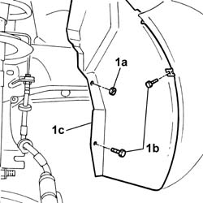
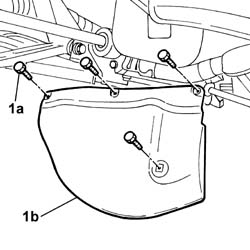
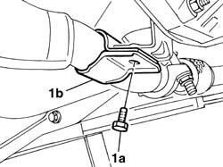
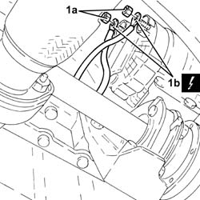
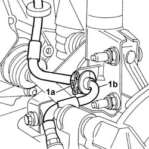
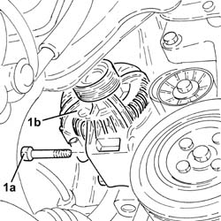
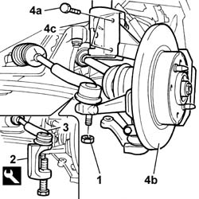
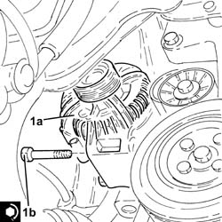
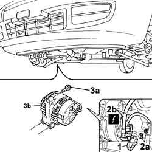

5530A14 alternator - r+r for versions with air conditioner
- Path
- Procedures > 55 ELECTRICAL EQUIPMENT > 5530 CURRENT GENERATOR > 5530A alternator and components > 5530A14 alternator - r+r for versions with air conditioner
- Kind
- repair procedure (removal / refitting; the operation number is the code)
- Applies to
- all engines; all production periods
- Interactive page
- https://sloeber94.github.io/elrnDB-fPnd/en/#/2752962
Applies to: engines: 1.1, 1.2 8v; all production periods
 Removing
Removing
 Refitting
Refitting1048A10 air cleaner filtering element - replace
1. Undo the fixing nut (1a) and the fixing bolts (1b) and move the wheel arch liner (1c) aside.

Applies to: engines: 1.3 JTD 16v; all production periods
Removing
RefittingRemove the car from the ramps.
Disconnect the battery negative terminal.
1092G11 Engine components single drive BELT - R.R. for versions with air conditioning
1. Undo the fixing nut (1a) and the fixing bolts (1b) and move the wheel arch liner (1c) aside.
Applies to: engines: 1.1, 1.2 8v; all production periods
1. Undo the fixing bolts (1a) and remove the timing dust guard (1b).

Applies to: engines: 1.3 JTD 16v; all production periods
1. Undo the fixing bolts (1a) and remove the timing dust guard (1b).
Applies to: engines: 1.1, 1.2 8v; all production periods
1092B40 air conditioner compressor/alternator drive belt - r + r
1. Undo the fixing bolt (1a) and release the exhaust pipe lower fixing bracket (1b).

Applies to: engines: 1.3 JTD 16v; all production periods
1. Undo the nuts (1a) and disconnect the electrical connections (1b) from the alternator.
 | Name | Connector |
|---|---|---|
1b | Alternator | A10 |

Applies to: engines: 1.1, 1.2 8v; all production periods
Right side of car.
1. Remove the fastening clilp (1a) and release the brake fluid pipe (1b) from the suspension damper.

Applies to: engines: 1.3 JTD 16v; all production periods
1. Undo the bolts (1a) and remove the alternator (1b).

Applies to: engines: 1.1, 1.2 8v; all production periods
Right side of car.
1. Unscrew the retaining nut.
2. Fit the tool for releasing the steering track rod ends.
 | Name | Country |
|---|---|---|
2 | Extractor | 1.871.000.700 |
3. Release the steering track rod ends from the wheel hub.
4. Undo the fixing bolts (4a) and release the front steering knuckle (4b) from the shock absorber (4c).

Applies to: engines: 1.3 JTD 16v; all production periods
Refitting
Removing1. Place the alternator(1a) back in its housing and secure it tightening the bolts (1b) to the recommended torque.
 | Fastening | Component | Ø | Value (daNm) |
|---|---|---|---|---|
1b | Bolt | ALTERNATOR ASSEMBLY | M8 | (Support side) 2.3 ÷ 2.8 |

Applies to: engines: 1.1, 1.2 8v; all production periods
Right side of car.
Open the bands fastening the coupling boot.
Release the driveshaft from the differential side joint.
1008C32 GEARBOX LOWER REACTION ROD ' -R.R.
1. Open the wiring protective cover.
2. Undo the fixing nuts (2a) and disconnect the alternator electrical wiring (2b).
| Name | Connector |
|---|---|---|
2b | Starter' motor | A20A |
| Name | Connector |
|---|---|---|
2b | Starter' motor | A20B |
3. Undo the fixing bolts (3a) and remove the alternator (3b).

Applies to: engines: 1.3 JTD 16v; all production periods
Connect the electrical connections to the alternator and fix them using the nuts.
| Name | Connector |
|---|---|---|
- | Alternator | A10 |
Fit the timing gear dust guard and tighten the fixing bolts.
Tighten the wheel arch liner bolts.
1092G11 Engine components single drive BELT - R.R. for versions with air conditioning
Connect the battery negative terminal.
Remove the car from the ramps.
Applies to: engines: 1.1, 1.2 8v; all production periods
Refitting
RemovingFit the alternator in its seating and tighten the fixing bolts to torque.
| Fastening | Component | Ø | Value (daNm) |
|---|---|---|---|---|
- | Bolt | AIR CONDITIONER ASSEMBLY COMPRESSOR | M10 x 1.25 | 5 |
Connect the alternator wiring and tighten the fixing nuts.
| Name | Connector |
|---|---|---|
- | Starter' motor | A20A |
| Name | Connector |
|---|---|---|
- | Starter' motor | A20B |
Close the alternator wiring protective cover.
1008C32 GEARBOX LOWER REACTION ROD ' -R.R.
Fit the driveshaft in the different side joint and re-secure the boot with its fixing band.
 | Type | Component | Name | Qty. |
|---|---|---|---|---|
- | Grease (g) | DIFF END CONSTANT VELOCITY JOINT | TUTELA MRM ZERO | 100 |
Position the front hub steering knuckle in the housing in the shock absorber and tighten the fixing bolts to torque.
| Fastening | Component | Ø | Value (daNm) |
|---|---|---|---|---|
- | Nut | FRONT HUB STEERING KNUCKLE. | M10 x 1.25 | 7.5 |
Fit the steering track rod end in place and tighten the fixing nut to torque.
| Fastening | Component | Ø | Value (daNm) |
|---|---|---|---|---|
- | Nut | PRESSURE PUMP | M8 | 2.5 |
Fit the timing gear dust guard and tighten the fixing bolts.
Tighten the wheel arch liner bolts.
Secure the brake fluid pipe to the mounting.
1092B40 air conditioner compressor/alternator drive belt - r + r
Topics linked from this page (5)
- 1008C32 GEARBOX LOWER REACTION ROD ' -R.R.
- 1048A10 air cleaner filtering element - replace
- 1092B40 air conditioner compressor/alternator drive belt - r + r
- 1092G11 Engine components single drive BELT - R.R. for versions with air conditioning
- 4450B04 right front wheel r r
Topics that link to this page (6)
- 1004B12 power unit with manual gearbox - r+r for versions with a/c
- 1004B13 POWER UNIT WITH MECHANIC TRANSMISSION - R.R. FOR MODELS WITH AIR-CONDITIONER AND FOUR-WHEEL DRIVE
- 1016C11 SINGLE CYLINDER HEAD-R R GASKET FOR VERSIONS WITH AIR CONDITIONER
- 1028H21 piston with connecting rod - r r
- 1080D35 Engine oil collection MANIFOLD - R.R.
- 5530A40 alternator brackets/mount/spacer - r r